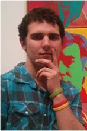
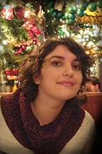
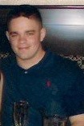
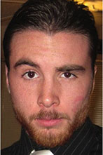

| HOME | FESTIVAL | CONFERENCE | SUBMIT | SPONSORS | ATTEND |
Meet the Staff
 |
Jon Whitaker Assistant Director (Public Relations) jwhitaker@visionsfilm.org Johannesburg-born Jon Whitaker is a super senior at the University of North Carolina Wilmington, pursuing a BFA in Film Studies. As a producer, his interests lie in performance cinema, post-internet art, the New Aesthetic, and festival production. Now in his second year as an assistant director for the Visions Film Festival & Conference, he also serves as co-director of the Dirt Poor Filmmakers Festival in Wilmington—a monthly screening party curated by local industry members, dedicated to exhibiting micro-budget films made by the "99 Percent." |
 |
Hamilton Hudson Assistant Director (Programming, Traffic, and Operations) hhudson@visionsfilm.org Now in her last leg at UNCW, Hamilton Hudson will graduate with a completed major in Film Studies and minor in English. As the current AD of PTO, she facilitated the extensive Call For entries and Invitationals phase for the festival and conference last fall, and this spring will focus her energy on programming film and paper selections while also overseeing maintenance of the smoothest possible functioning for the 2013 event. Working Public Relations for Visions last year, her follow-up article on Visions 2012 was published in UNC@Work. This past summer she interned at Screen Gems Studios, worked on numerous short film projects around town, and contributed to the 18th annual Cucalorus Film Festival as a short film programmer. After opting to tackle thesis courses in production and critical studies, Hamilton ventures in pursuit of a film career that challenges her both by way of industry business and creative aesthetic, preferably in New York City. |
 |
James Martin Assistant Director (Programming, Traffic, and Operations) Originally hailing from New Jersey, he is a senior at UNCW where he double majors in Film and Psychology. He plans on graduating in December, 2013 and hopes to pursue a career as either a producer or film critic. In addition to Visions, he also works for Dirt Poor Filmmakers Festival, a Wilmington-based festival aimed at showcasing local film talent. When not working on film-related things, James enjoys surfing, biking, and engaging in life’s curiosities. Some of his duties on the Programming, Traffic, and Organization team include scouting for invitationals, processing entries, and communicating with the 2013 Visions hopefuls. |
 |
Natasha Alden Assistant Director (Hospitality and Events) nalden@visionsfilm.org Natasha is a senior at the University of North Carolina Wilmington, pursuing a double major in Film Studies and Business Administration with a focus in Marketing. She has previously attended the University of Wollongong in Australia and has completed an internship with EUE/Screen Gems Studios and STW Talent Agency. Natasha has worked as the hospitality coordinator and is most recently the Assistant Director for the Visions Film Festival and Conference. Presently, she oversees and promotes the visions screening tour, hospitality and travel, and all visions events. She has won numerous awards for her film and digital photography. Natasha holds a passion for foreign films and cinema of the world. She is currently focusing on her animated film, "Fred Says..." |
 |
AJ Hallatt Assistant Director (Fundraising, Development, and Awards) ahallatt@visionsfilm.org AJ Hallatt is in her senior year at UNCW. She is studying film with a focus on working in the festival circuit. Her first semester working with Visions was spent on the Hospitality team. In addition to her work with Visions, she has interned at Cucalorus and is a cofounder of the Dirt Poor Filmmakers Festival. Her specialty lies in event coordinating - specifically throwing awesome high-energy fundraisers. AJ also maintains a passion for filmmaking. She has produced and directed several documentaries and is currently in the midst of editing her senior film Little Death, a lyrical (and controversial) art film that uses nude figures to express feelings of isolation in moments of intimacy. |
 |
Matt Gossett Research and Event Developer Matt Gossett, a native of Raleigh, NC, spent his early years of college at NC State University where he was a DJ and hosted a half-music-half-talk-show under the pseudonym Lancelot Link. Now a Film Studies major at UNCW, his interests include video electronics, live video editing and avoiding a high voltage-related death. Matt has been working hard this year to get quality films and papers for the festival and conference. He is also working with venue staff and guest filmmakers and scholars to help everything run smoothly the day of the event. |
|  |
Brandon Konecny Programming and Ops Coordinator Brandon is a film studies major and music minor at the University of North Carolina Wilmington. He currently serves in the Programming, Traffic, and Operations department of Visions Film Festival & Conference where he is happily up to his neck in abstract and film submissions. Primarily focusing on critical studies, he enjoys writing about film and researching such topics as postwar American avant-garde film, Eastern European cinema, Christopher Maclaine, youth subcultures in film, Cinema Novo, film theory, the Romanian New Wave, Israeli cinema, and Cold War Era science fiction. When not consumed with his cinephilia, he likes playing guitar and saying random sentences in Russian. Following graduation, he plans to pursue a career in entertainment law. |
|  |
Brianna Barker Animator and Media Design A constant doodler, Brianna is in her final year at UNCW, where she supplements film studies with animation and digital art. Inspirations and interests include everything from art nouveau, alternative album covers, James Smith kitsch, niche cultures, and experimental comic artists. This is Brianna's first time on the Visions crew, with contributions that include new print and digital visuals, some of which move! |
 |
Joey Powell PR Coordinator & Staff Writer Joey Powell is an undergraduate Film Studies major and Psychology minor at the University of North Carolina Wilmington whose main role in Visions is to interview past and current filmmakers and scholars and write articles for the website. His written work has been many places in many different forms, having optioned a screenplay in 2011, had poetry published in The Lyricist, and written reviews and profiles for Film Matters Magazine. When it comes to filmmaking, Joey enjoys preproduction and postproduction. When it comes to life in general, he likes movies and football. |
 |
Benny Blevins Digital Media Manager Benny is a super senior at UNCW in the Film Studies program. Benny is from Fayetteville, North Carolina, and likes to travel to many places including Spain, Romania, and in a circular swath around the USA. He has completed an internship at EUE/Screen Gems Studios in Wilmington. Benny hopes to be a producer, as well as write his own short films, and start a band as a career. Currently, Benny shoots and edits wedding videos locally with Brick Street Cinema. |
|  |
Chris Keefe Digital Media Assistant Manager Chris Keefe is a film major at the University of North Carolina Wilmington. As a recent addition to the Visions Film Festival team Chris is excited to get started and help contribute to a great year and successful festival this year. Chris assists the digital media department in proliferation of digital media to promote the festival and update Visions online presence. He is eager to start learning to code and program so he can take the reigns when the current staff graduates. Chris recently edited a short piece for the Strange Beauty Competition at the Cucalorus Film Festival. |
 |
Sarah Reedy Hospitality & Events Coordinator Sarah Reedy is a senior at UNCW with a major in Film Studies and a minor in Spanish. She served as a member of the hospitality team in last year’s Visions Film Festival and Conference and now she is the Hospitality Coordinator for Visions. She previously attended the University of Florence, Italy where she studied photography. Prior to the school year, Sarah worked on the set of Iron Man 3 as a production assistant and intends to continue working in the Wilmington Film Industry in this upcoming summer. Currently, she is working as producer in her senior seminar. The reflexive documentary focuses on race relations and ways to improve them on numerous collegiate campuses across the country, and is in production now. |
 |
Mary Schweers Community Outreach Coordinator Mary is a junior majoring in Film Studies and Business Administration with a concentration in Marketing. She has participated in the Flicker Film Society and the Association for Campus Entertainment Film committee at UNCW. Prior to the school year, Mary had the opportunity to work as a Production and Office Assistant for the Film Studies Program’s first feature-length narrative film Don’t Know Yet. As the community outreach coordinator, she focuses on bringing local attention to the Visions Film Festival and Conference on campus and around the community. Currently, Mary is producing an upcoming sitcom on the UNCW television station, TealTV. |
 |
Marge Streb Video Race Coordinator Marge Streb is the Co- coordinator of the 1 Hour 1 Take Video Race with Josh Powell, they work together to create and promote the festivals fun midday event. She also serves as the Social Media Coordinator and works with the PR department to promote the festival. Marge is a senior at UNCW majoring in Film Studies with a minor in Leadership Studies. She has participated in multiple 48 Hour Film Festivals in Baltimore, Maryland. Marge interned at Pickerel Pie Entertainment Company in New York City this past summer and hopes to return to city life as soon as possible. She also blogs for the fashion website www.collegefashionista.com and has reported on the street style of interns in NYC and current UNCW students. Marge is excited to be a part of the Visions team during her last year at UNCW. |
 |
Matt Marlowe Video Race Team Matthew Marlowe is a senior at the University of North Carolina Wilmington studying toward a major in Film Studies and a minor in Sociology. Matthew participates on campus with ACM SIGGRAPH with an eyeball toward animation and modeling for short films. In his spare time, Matthew enjoys writing screenplays and playing soccer (he also likes long walks on the beach and watching foreign films). This is Matthew’s first year on the staff of Visions, and as a member of the Midday Event and Video Race departments, he is excited to make it the best year yet. |
 |
Josh Powell Video Race Coordinator Josh is in his senior year at UNC Wilmington studying Film concentrating in screenwriting. During his time at UNCW, he has written, directed, and edited several short films and also served as Location Manager for UNCW's first ever faculty feature film "Don't Know Yet.". Josh aspires to create an independent production, which will make films that will celebrate the integrity and passion of indie filmmaking. He also aspires to make the first ever live-action Super Smash Bros. movie. The Video Race Coordinators work with Hospitality to plan, promote, and execute the Midday Event: the 1 Hour/1 Take Video Race. The Video Race unites students, faculty members, conference guests, and local and regional film enthusiasts. |
 |
Sway Davenport After Party Producer Sway is a senior in the Film Studies program at UNCW. He was initially drawn to filmmaking because it combines all the things he enjoys doing and allows him to foster his creative abilities. A rebel with a cause, Sway intends to lend his lively personality to Visions as part of its After Party team. Meanwhile, he plans to aid in all operations in order to produce the best Visions Film Festival and Conference yet. |
|  |
Chandler Baucom After Party Producer Chandler hails from the east side of America and is a Junior at UNCW. He has a seasoned background in film production and dreams of becoming a producer. He is currently working as the Visions after party producer and coordinator. He has interned at Joseph Dunton Camera as well as Cinepartners Unlimited, which has given him an inside look scoop on professional film production. Chandler is a strong believer in collaborative creativity and he's quoted, "Collaboration is key." His duties as the after party producer include contact establishment, planning, and fulfillment of all needs, so that everyone can have a jolly swell time. He's real excited to be here and plans on making this party super |
 |
Will Davis Director of Devolopment Will Davis is currently a Film Studies major at the University of North Carolina Wilmington with interests in documentary and travel/adventure filmmaking. He recently directed a short documentary, The Maco Light, about the famous North Carolina ghost legend. Currently, Will is editing a documentary about a retired Indiana welder and WWII veteran Ernie Taylor, who creates quirky metal sculptures. He is also in pre-production for a film about the relocation of family graves from the Little Tennessee Valley in Western North Carolina when the TVA flooded the area during WWII. |
| Channing Duke Assistant Development Coordinator Channing will be assisting the Fundraising, Development, and Awards departments for Visions by helping find venues, book bands, and plan events. She will also be assisting with tech and print traffic when needed. A North Carolina native and crew member of local film productions, Channing is a junior at UNCW pursuing a major in Film Studies. She hopes to continue furthering her career, focusing on the independent film industry and working towards being a camera operator, DP, or becoming more involved with the technical aspects of film festivals. Bringing her prior festival experience from Cucalorus Film Festival as Technical Director/Coordinator for Cucalorus 18, and technical knowledge from CFCC, Channing hopes to be a beneficial part of the Visions team. |
About the Festival Director
 |
Shannon Silva
is an Assistant Professor of Film Studies at the University of North
Carolina Wilmington. An experimental and documentary filmmaker, her
principal interests include issues of gender, consumerism, celebrity,
fandom, and community-building creative initiatives. In addition to
directing over 30 short films and videos, which have screened at
festivals internationally, she has worked as Screenplay Competition
Director for the Austin Film Festival and juried for the Ann Arbor Film
Festival, Cucalorus Film Festival, Cinematexas and Iowa City
Documentary Film Festival. Her most recent film, It’s A Girl
Thing: Tween Queens and the Commodification of Girlhood
(https://www.facebook.com/itsagirlthingmovie) is currently making its
rounds on the festival circuit. |
| Mission |
| Awards |
| Meet the Staff |
| F.A.Q. |
| Contact Us |
| ABOUT |
FESTIVAL |
CONFERENCE |
SUBMIT |
EVENTS |
ATTEND |
SPONSORS |
PRESS |
| Mission The Awards Meet the Staff FAQ Contact Us |
Film Selections Archives 2012 |
Paper Selections Archives 2012 |
Overview Forms & Guidelines |
1Hr:1Tk Video Race Screening Tour The After Party |
Event Schedule Reserve Passes Parking & Venues Travel & Lodging |
2013 Sponsors Become a Sponsor |
In the News Visions PR |